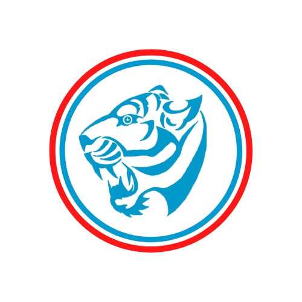

INITIATIVE FONDÉE EN 2019
Astuces Entrepreneur.
Une plateforme dédiée à la promotion de la culture entrepreneuriale et au renforcement des capacités des jeunes. À travers cette initiative, plus de 3 000 jeunes entrepreneurs ont été formés et accompagnés, et une communauté de plus de 40 000 personnes s’est développée à travers l’Afrique.
Découvrir la plateforme ↗